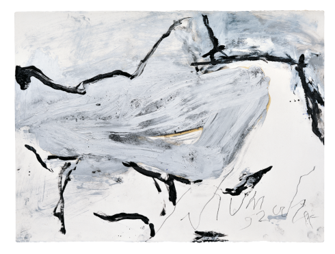

Emil Schumacher -
BLÄTTER AUS DEM ENGADINLandschaft und Licht sind dabei in den seit Beginn der 1980er-Jahre entstandenen Gouachen aus dem Engadin nicht mimetisch abgebildet. Im romantischen Sinne „Erdlebenbilder“ sind die dort entstandenen Werke abbildferne Erfindungen aus dem Inneren des Künstlers. Sie fügen der belebten und unbelebten Natur etwas Neues, der reinen Vorstellungskraft des Künstlers Entsprungenes hinzu. Die wirkliche Natur ist Stimulans für das Bild. Im Bild ist allein die Vorstellungskraft des Künstlers Wirklichkeit.

Emil Schumacher
Blätter aus
dem Engadin
07. April bis
23. Juni 2013